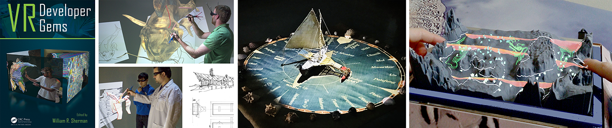

MinVR3 Unity Package

This in the 3rd incarnation of "MinVR", an open source toolkit designed to support experiental and creative research in XR, spatial user interfaces, pen and touch interfaces, and 3D data visualization.
MinVR3 is being created because research practice has evolved in recent years to, almost exclusively, rely upon the Unity game and C# scripting. MinVR2 included some early support for Unity via a UnityClient that could be used together with a MinVR2 server application written in C++ to deliver input events and handle synchronization for cluster rendering.
In contrast, MinVR3 embraces Unity as the supported platform. It drops explicit support for C++ graphics engines and adds native Unity/C# support for running the same code on multiple VR configurations, input device drivers beyond those supported by Unity, projection-based and other less common displays, sharing events across remote connections, and synchronized cluster rendering. Several of these features have their roots in earlier versions of MinVR, but MinVR3 is not a direct port to C#. It reimagines how the useful past concepts realized in a C++ development environment will best function for programming with C# in the Unity Editor. For example, MinVR3 introduces the idea of VREventPrototypes. These are extensible in the sense that new prototypes can be added to the system, but less flexible than the event data index used in MinVR2. However, the advantage of pre-defining the type of data produced by each event is huge for programmers working within the Unity Editor. This means that MinVR3 can provide a dropdown list of valid events produced by all of the devices, filters, and event aliases in the scene whenever a programmer needs to assign an event to a listener.
High-Level Goals and Design Decisions
Goal 1: Take advantage of recent commercially available hardware and game engine support for XR.
- Design Decision: Embrace Unity. We cannot do a better job than Unity at: a) rapid development using existing assets and packages contributed by the community, b) publishing online tutorials and examples to introduce XR programming in Unity to new programmers, c) developing and maintaining a build system that can deploy interactive graphics programs to the wide range of headset and mobile devices that are coming to market and that often run their own operating systems and their own custom device drivers, and d) probably many other things.
Goal 2: Support a wide variety of displays (e.g., CAVE's, PowerWalls, multi-touch stereoscopic tables, 3DTV's, head-mounted displays). The heart of our research program is exploring how we will interact with computers 20 years from now. We need to be able to imagine and prototype what those interactive visualization devices of the future might look like, not just support the commercially available devices of today.
- Design Decision: Since Unity's support for this is generally poor, MinVR should provide this support in the form of scripts, prefabs and/or drivers for outputting Unity graphics to a variety of displays.
- Design Decision: This also implies support for running in a cluster mode and/or multi-viewport mode with frame-level synchronization of input events and stereoscopic rendering. This is required for many multi-projector displays.
Goal 3: Support a wide variety of input devices (e.g., optical trackers, multi-touch input devices, haptic devices, home-built devices) following the same logic as G2.
- Design Decision: Unity's support is great for commercially available game and XR controllers, desktop systems, and mobile devices like tablets and phones, but it is not good for what had previously been the standard in the VR community (VRPN) and almost all of the "more interesting" input devices we have used previously in the lab for our research. MinVR should provide input device drivers for these devices.
Goal 4: Make apps configurable, so the same application can be run on multiple of these XR input/display device combinations without refactoring or rebuilding the application. An application written for a Quest or Vive should also be able to run in a desktop mode or in a VR environment where there are no controllers present, like Google Cardboard.
- Design Decision: Unity's XR system provides some early support for building one application that can run on multiple similar XR devices by providing a common abstraction for XRControllers and XRHMDs. Our goal requires the application to be able to not just switch between which XR device it uses but also switch between using an XR device and a completely different device, like a tablet or desktop. Technically, Unity supports all these things, what is needed to achieve the goal is more like a wrapper and programming convention on top of Unity. Like the config files for different VR platforms used in past versions of MinVR, we need some way to toggle portions of the scene hierarchy on/off and adjust configuration settings based upon the current platform. MinVR should provide this.
- Design Decision: Some abstraction around the input events that the various hardware devices produce is also needed. All past versions of MinVR and the even earlier toolkits we have used at Brown University and then UMN were based on a flexible system of input events and aliases that are not necessarily associated with a particular controller, making it possible to produce compatible events from multiple different controllers. Unity's New Input System is close in spirit to this. For example, it makes it possible to bind inputs from multiple specific devices to more generic actions, like "jump", "fire", or "cancel". However, it does not yet work for many of the devices Unity supports, and writing new device drivers seems to require treating each device like a game controller with a current state represented in memory where changes to that state trigger events. Our past approaches seem more flexible and direct. Event produces generate Events and add them to the event queue. These producers do not need to be tied to a physical device or even state in memory. They could be a menu object that produces a "ItemSelected" event. The beauty of our past designs is that this ItemSelected event is really no different than a "D-Pad Down" event, so these events can be used interchangeably in finite state machines and other user interface code. MinVR3 should continue to utilize its own VREvent system rather than pipe events through Unity's New Input System. However, we should continue to closely watch Unity's progress as they move the system out of preview and into production. If it continues to get closer and closer to what we have found useful in the past, then it may be advantageous to reimplement some or all of MinVR to use InputActions so that we can remain more compatible with Unity and leverage all their development. In the meantime, MinVR should support translating Unity InputActions into VREvents and translating VREvents into Unity InputActions so that developers can take advantage of other Unity XR packages as they come online.
Goal 5: For fast-moving research that experiments with new hardware, we need to be able to quickly expand MinVR in ways that we will not be able to guarantee will work or even compile on every platform or in every situation in which MinVR is used.
- Design Decision: Similar to MinVR2, MinVR3 should implement some plugin-like mechanism to support optional extensions, especially when they introduce additional dependencies, like requiring developers to install an extra library or when they only work on specific operating systems or platforms.
We think work toward these five goals will enable one more:
Goal 6: Package, reuse, and distribute advanced spatial user interfaces developed through the lab's research. Work toward a Unity-based collection of the lab's spatial user interface research packaged up in the form of reusable widgets and interaction techniques. As useful, the library should also include implementations of techniques developed elsewhere, and eventually, we could accept contributions to the library from outside the lab.
- Design Decision: This goal is enabled by MinVR. It falls outside of the original "minimal" scope of MinVR, so this work will grow into its own project. (Tentative Title: Open Up: A Library of Spatial Interaction Techniques.) However, it is so closely tied to the way MinVR works and so useful to consider while developing MinVR, that we will begin by working on them together in the same repository. The scripts inside MinVR3's
interactionfolder are like the incubator for OpenUp.
Getting Started
- The table of contents on the left lists the important concepts in this manual in the order recommended for new MinVR users.
- The main page for API Documentation organizes the major classes and interfaces by theme / frequency of use.